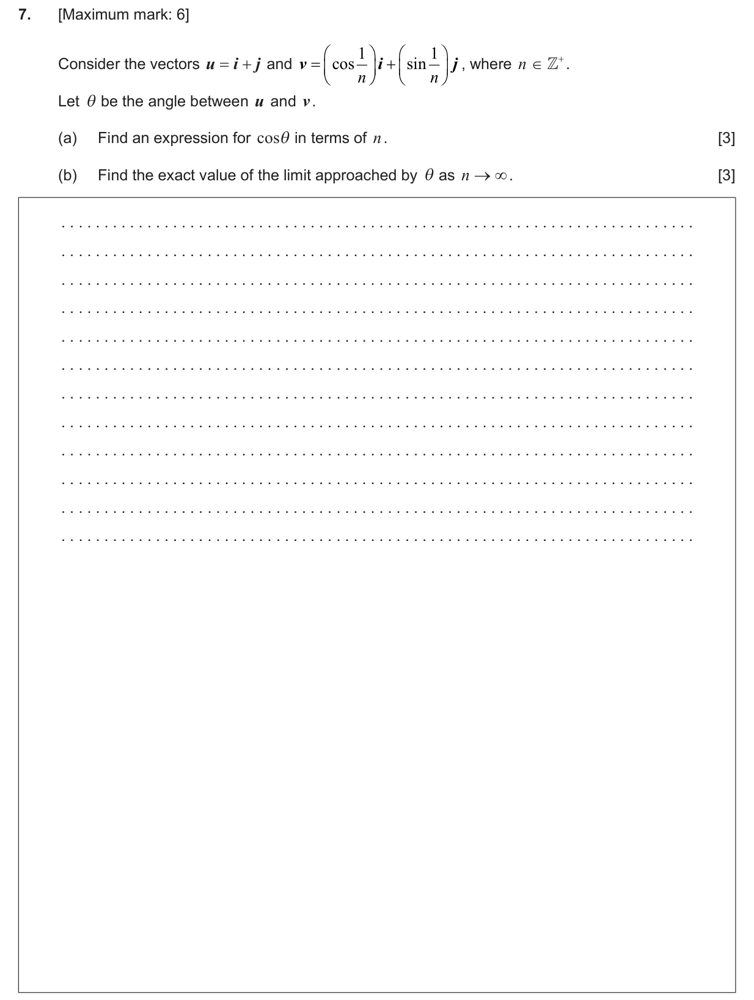
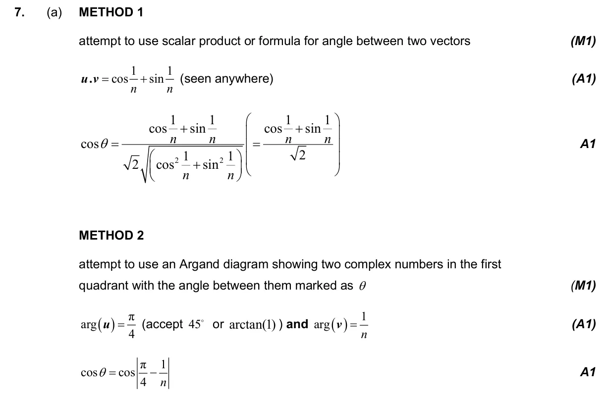
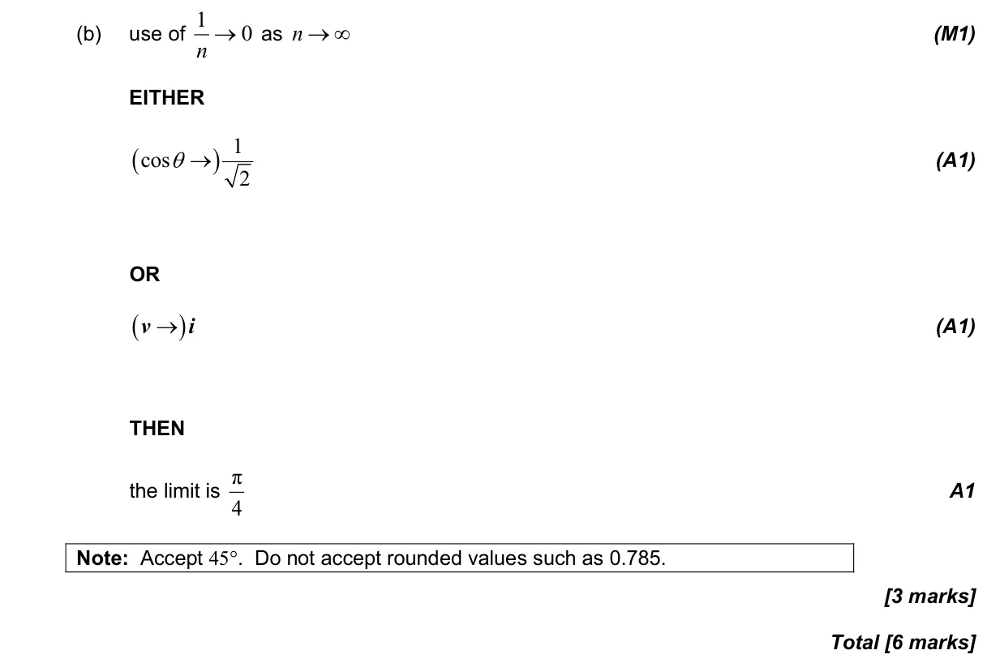

3.13 The scalar product and the angle between vectors3.6 Pythagorean identity and double angles5.12 Continuity, differentiability, limits and differentiation from first principles3.5 Unit circle definitions, exact trig ratios and ambiguous case of sine rule
Question

Markscheme

